LyfePulse

ORVOSI FIÓK AKTIVÁLÁSA
A csatlakozási kérelmed elbírálás alatt van
Az adminisztrátor ellenőrzi a megadott adatokat és dokumentumokat. Amint a kérelmedet jóváhagyják, hozzáférést kapsz a LyfePulse orvosi portál funkcióihoz.
Jóváhagyásra vár
Kérjük, nézz vissza később. Addig a portál többi funkciója nem érhető el.